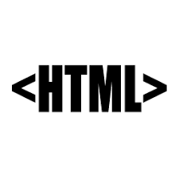
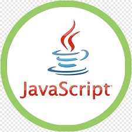

| Logo |
Name |
Description |
Link |
|  |
Hyper Text Markup Language |
Hypertext Markup Language, a standardized system for tagging text files to achieve font, colour, graphic, and hyperlink effects on World Wide Web pages. |
HTML |
 |
Casscadind Style Sheets |
Cascading Style Sheets (CSS) is a style sheet language used for describing the presentation of a document written in a markup language like HTML.[1] CSS is a cornerstone technology of the World Wide Web, alongside HTML and JavaScript. |
CSS |
|  |
Javascript |
JavaScript is a client scripting language which is used for creating web pages. It is a standalone language developed in Netscape. It is used when a webpage is to be made dynamic and add special effects on pages like rollover, roll out and many types of graphics. |
JS |